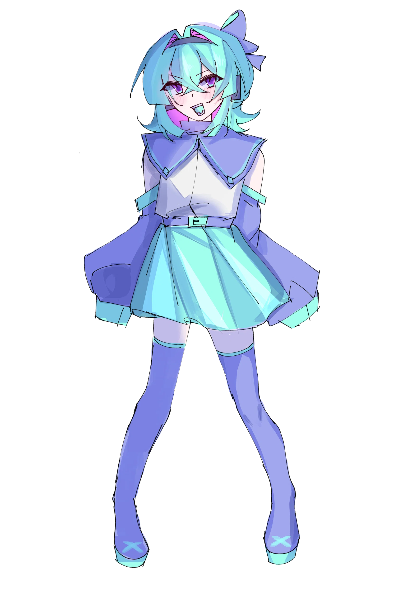

插画・漫画
在尊重官方设定的范围内自由创作，换装与恶搞也欢迎。
喜欢薄荷、阳光和大海的少女。性格乐观，但对在意的事会有点偏执。
PROFILE
STORY
她喜欢在阳光好的午后画画，桌边永远放着一杯抹茶。薄荷糖是随身必备——据说她嘴巴的颜色，就是薄荷嚼多了才变成这样的。
看到海和鸟会停下来发呆很久，讨厌消毒水、铁锈和血腥味，闻到就会皱眉走开。
性格乐观，但对认定的事情会一直钻下去。这种偏执让她把一首歌的每个音都抠到自己满意为止。
代表色是青色和蓝紫色，就像她头发在光下的颜色。
※ 以上内容整理自角色公开设定，正式发布时可补充身高、血型等信息。
ARTWORK
两套服装的全身立绘，可放大查看细节。

FANWORK
秋音棠是为了在大家的作品里唱歌而诞生的角色。以下范围内，欢迎自由进行二次创作。
在尊重官方设定的范围内自由创作，换装与恶搞也欢迎。
UTAU 翻唱、MMD、直播等。请标注出处。
文字作品和 Cosplay 也欢迎。R-18 作品请标注年龄限制。